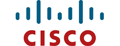
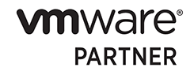
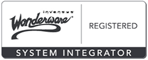

DST Partners & Affiliates
OSIsoft's PI System is the industry standard in enterprise infrastructure for management of real-time data and events. The OSIsoft PI System is used in manufacturing, energy, utilities, life sciences, data centers, facilities, and the process industries. DST works with companies using The PI System to help them manage assets, mitigate risks, and comply with regulations.
Kepware Technologies develops a wide range of communication and interoperability software solutions for the Automation industry. Their unique software architecture maximizes the availability of open connectivity and expedites project development through the use of a single server interface, regardless of the control system in use. Their products are known worldwide for quality, reliability and ease of use.
As a Microsoft Silver Partner, DST works with customers and partners to design, build, and support mission critical solutions that create business value on the Windows platform. We agree with Microsoft's observation that it’s not products that enable a mission critical enterprise—it’s a combination of people, process, and technology.
Cisco Systems, is the worldwide leader in networking for the Internet. Networks are an essential part of business, education, government and home communications. Cisco networking solutions are the foundation of these networks. Cisco hardware, software, and service offerings are used to create solutions that increase productivity, improve customer satisfaction and strengthen competitive advantage.
VMware is the global leader in virtualization and cloud infrastructure, delivers customer-proven solutions that accelerate IT by reducing complexity and enabling more flexible, agile service delivery. Using VMware, DST enables customers to adopt a cloud model that addresses their unique business and automation challenges. VMware’s approach accelerates the transition to cloud computing while preserving existing investments and improving security and control.
Human Machine Interface (HMI) and SCADA solutions vary widely from simple and straightforward to complex and demanding. Wonderware InTouch HMI & Visualization software coupled with the award-winning ArchestrA System Platform are uniquely positioned to be extremely easy to use as well as powerful and sophisticated to meet the most demanding and challenging of solution requirements.
Monaghan Engineering provides specialized products for the Electric Utility, Pipeline, Oil and Gas Industries. They manufacture Sequence of Events Recorders, Time Reference Interfaces, and Protocol Converters.